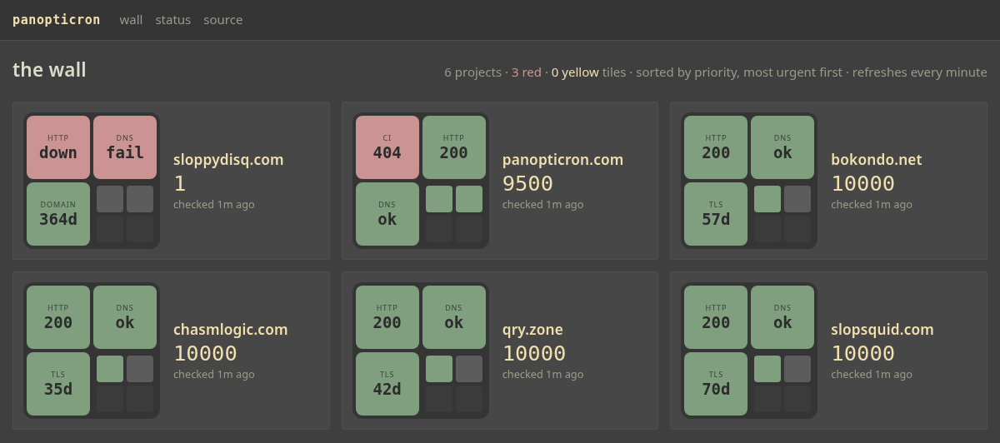

panopticron
One wall for everything I run on the web. Every domain is a cluster of coloured tiles, the wall sorts itself by urgency, and a human can overrule it — in the open.
read it by colour one number the lifeline garage door open the rebuild the wall, live info@panopticron.com
four tabs, one nervous glance
It started at a digital agency in 2025. Client sites on Vercel, CI on GitHub, deploy status in one tab, test results in another. When something broke you found out late, because nobody keeps four tabs open all day and actually looks at them. Panopticron put it on one screen: open it, see which projects are fine and which need a hand. No reading. Colour.
In 2026 the estate is mine — a handful of domains on Cloudflare, a few repositories, certificates, registrations. Same problem, smaller, and mine to get right. This page is the introduction; the wall is the thing.
read it by colour
Each project is one fixed-size frame: three big tiles for its three biggest problems, four small ones nested in the corner for everything else. Errors rise to the big tiles on their own; the wall puts the worst project top-left. Every tile is a lens — one thing watched: does the name resolve, does the page answer, is the certificate healthy, is the registration about to lapse, did the last deploy land, is CI green.
Four frames, four stories, no text read. That is the whole interface idea — the LensCluster — and it survived the rebuild untouched.
one number sorts the wall
Every project starts at 10000 — calm. Each problem subtracts a malus; the floor is 1. Lower is more urgent, and that one integer is the entire sorting rule:
| −8000 | the site is down for visitors (no answer, or the name doesn't resolve) |
| −7000 | the certificate is dead — browsers refuse the connection |
| −5000 | the registration is gone or going |
| −2000 | the last production deploy failed |
| −500 | CI is red |
| −300 | warnings: slow, expiring, stale |
Then the part that matters. A human can override the number. Type one in, the project moves, and the wall shows a ✎ beside it for as long as the override stands. Automation should support decisions, not replace them — and when a person stepped in, it should be visible that they did.
the lifeline
Priority over time. Every change writes one line to an append-only log; the chart is that log drawn as steps. Hollow points are a human's hand.
garage door open
A panopticon is one hidden watcher and many watched. This is the inverse: the thing being watched is my own work, and the wall is public. Anyone can walk past and look in. Transparency, not surveillance.
The register comes from Robin Sloan's note about a woodworker who keeps his shop door propped open all day so that anyone riding past can see the tools and the boards — "I am here, working." A monitoring dashboard is usually the most private page in a company. Making it the front page of a domain is a small, deliberate act of that kind.
Panopticron sits with uroboro and wherewasi in a family of self-observation tools: things I build to see my own work clearly, with the door open.
the rebuild
The 2025 version — Next 14, Refine, Material UI, Supabase — was 13,248 lines in 90 files, and most of them existed to be graded: six colour themes, a login system nobody used, a component showcase, a marketing page. The idea was roughly eleven percent of the code.
The 2026 version is Go and SQLite. One binary, one database file, about two thousand lines, two dependencies, no JavaScript. Kept: the LensCluster, the priority score with its visible override, the lifeline, the log of every poller run. Dropped: everything that wasn't the signal. Same picture on the screen.
- source — the rebuild, readable end to end in a sitting
- the 2025 story on qry.zone, and its code
the wall, live
